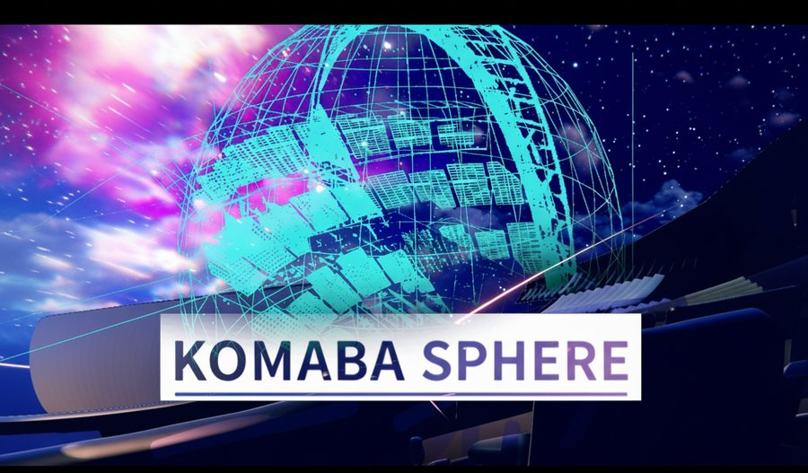
触覚VRコンテンツ制作
所属サークルでの活動
東大XRサークル UT-virtual で、VR開発のプロジェクトを継続的に手がけてきた。自作の触覚ベスト＆チェアを用いた作品は、全国メタバースコンペティション2025本選で優秀賞。
Haptic VestUnityVR Content
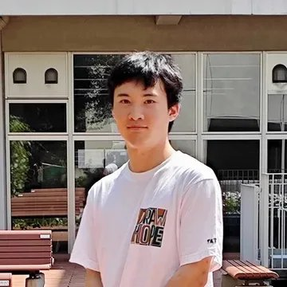
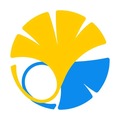
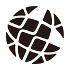
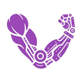
ハードの制作からロボットの制御、DL/MLモデルの実装まで、幅広い技術を授業で学ぶ。課内では制御・信号処理や電子回路を専攻し、課外活動で機械学習やシステム設計を学ぶ。
VRサークル所属中に漠然とした仮想現実実現の夢が具体的になり、それ以来、数十年後のナーブギアの実現を一貫して志している。侵襲型デバイスや、自由エネルギー原理、統合情報理論（IIT）といった分野に関心を持っている。
垣根なく学ぶことがナーブギア実現の助けになると考えるとともに、自分の主軸として脳神経科学を中心としたウェットな分野を学んでいきたい。
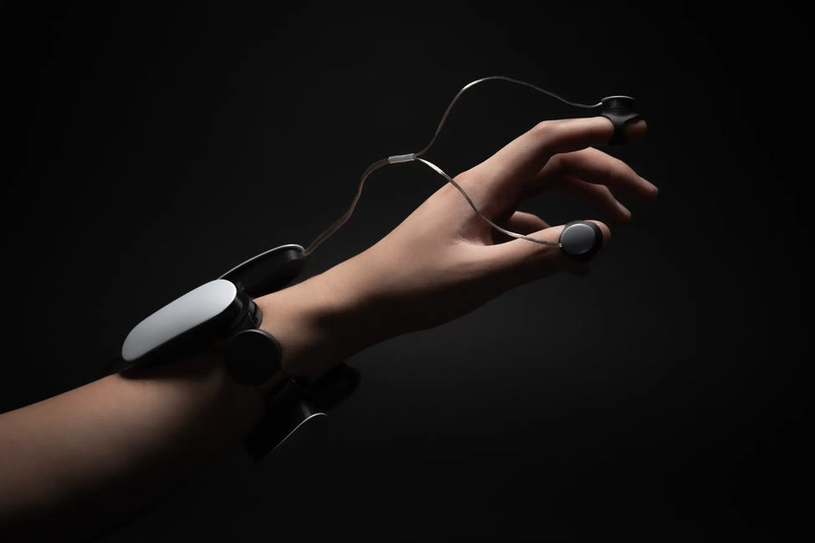
設計・実装
ハプティクスデバイス向けSDKの開発。システム構成とデバイス制御の設計・実装を担当。
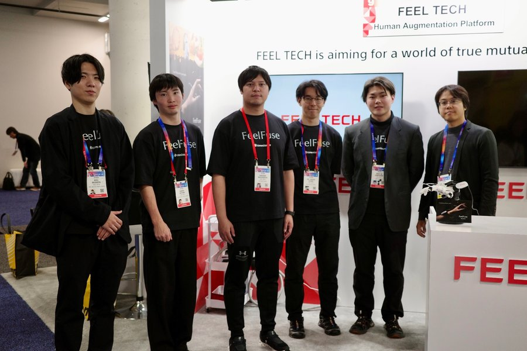
制作・現地運用
展示向けXRコンテンツの制作を担当し、現地での運用にも帯同。
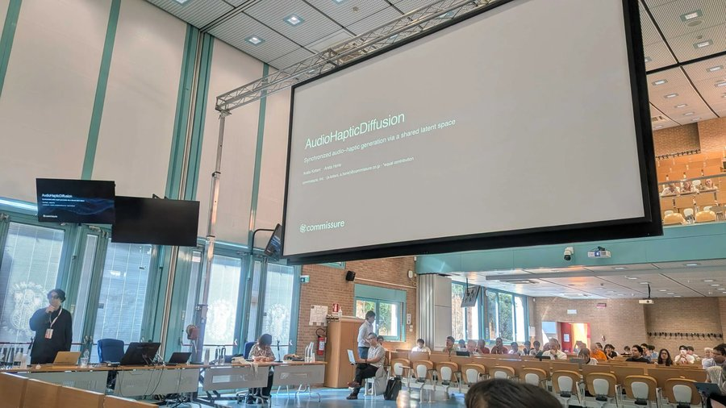
Synchronized Audio-Haptic Generation via Shared Latent Space
音響と振動触覚を共有潜在空間で扱うdual-branch latent diffusion。音と時間的に噛み合った触覚波形を生成する。
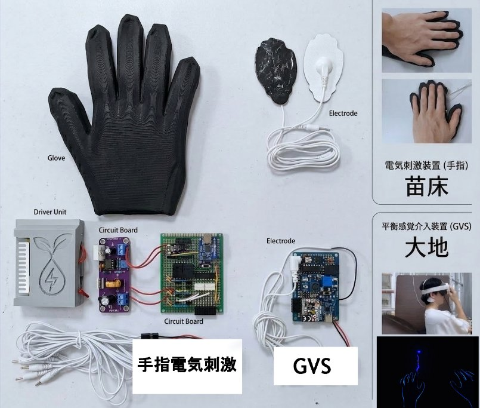
IVRC2025
アナログ回路から作った自作デバイスとUnityでのVRとの連携で、電気触覚固有の違和感を生かした作品を展示した。

所属サークルでの活動
東大XRサークル UT-virtual で、VR開発のプロジェクトを継続的に手がけてきた。自作の触覚ベスト＆チェアを用いた作品は、全国メタバースコンペティション2025本選で優秀賞。
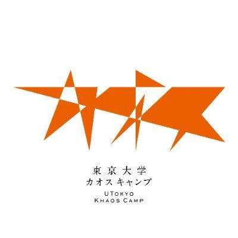
東京大学カオスキャンプ — ロボット制御担当
3DCGアニメーションとリアルタイム関節制御を合わせた、Unity/C++システムを構築し、CGクリエイターの操作から躍動感あるロボット動作を実現した。
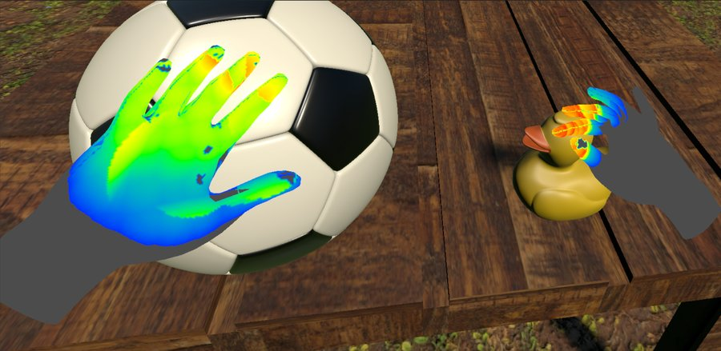
構築・実装（2025年度）
自作IMUデータグローブのセンサ信号に対するBi-LSTMのノイズ除去モデルを実装。加えて、ComputeShaderによるGPU並列計算で、接触圧判定をリアルタイムに行うシステムを構築。
技術の習得に専念するため。
デバイスのSDK・システム開発、展示向けXRコンテンツ制作、触覚提示に関する研究。
ロボットの方策学習と汎用的なモデル。
東京大学カオスキャンプのチームメンバーからの誘いにより参加。
EuroHaptics 2026 — LNCS vol. 16593, pp. 151–160. Springer, Cham.
EuroHaptics 2026 — LNCS vol. 16593, pp. 249–258. Springer, Cham.
自作の触覚ベスト・チェアを用いた作品。
GVS・電気刺激デバイスを用いた体験型作品でリーダーを担当。
ロボット制御を担当。